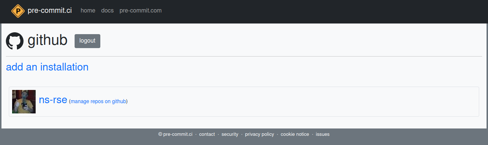
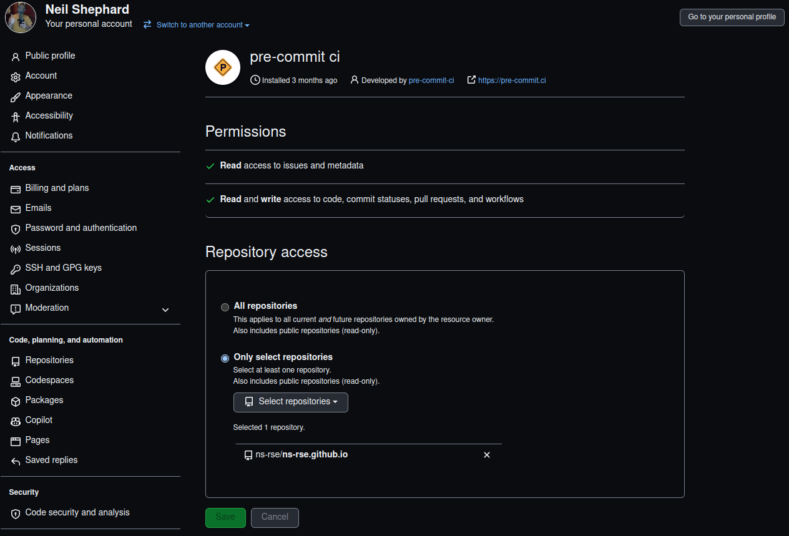
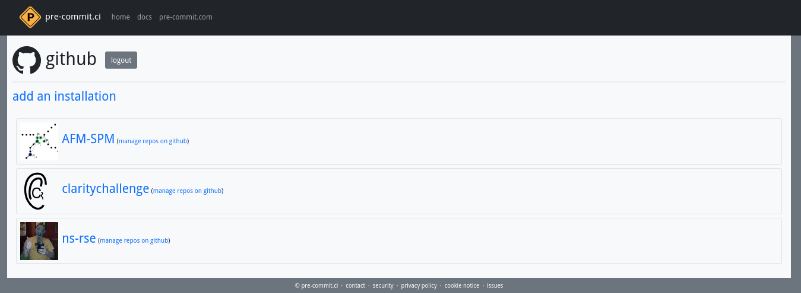
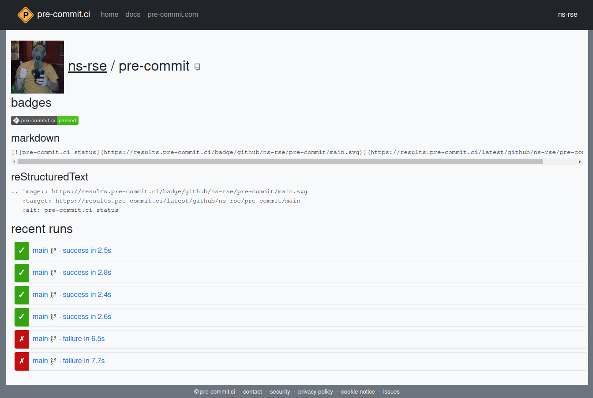
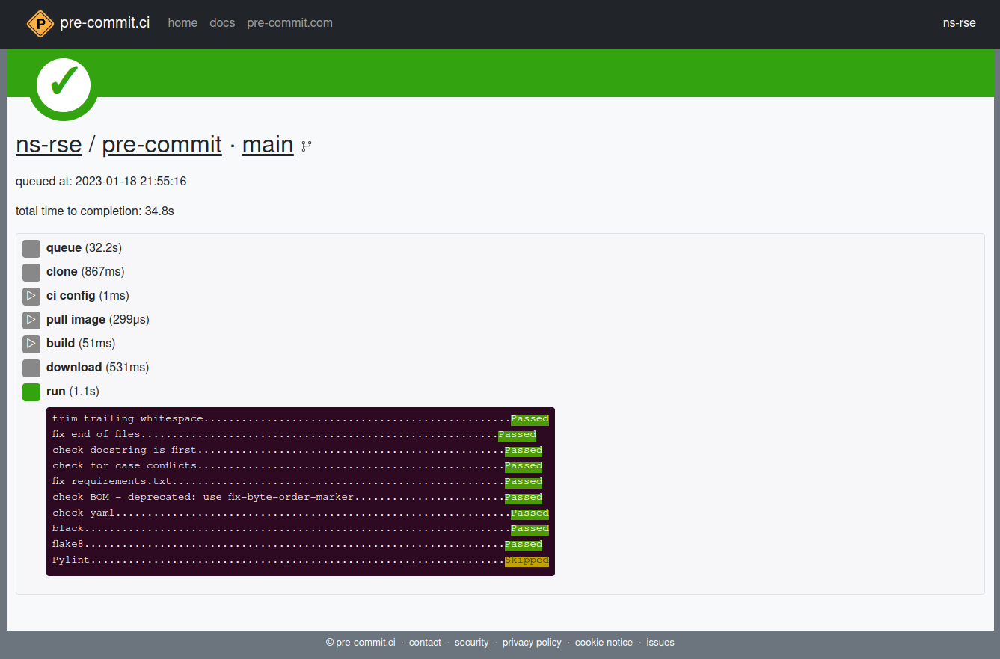
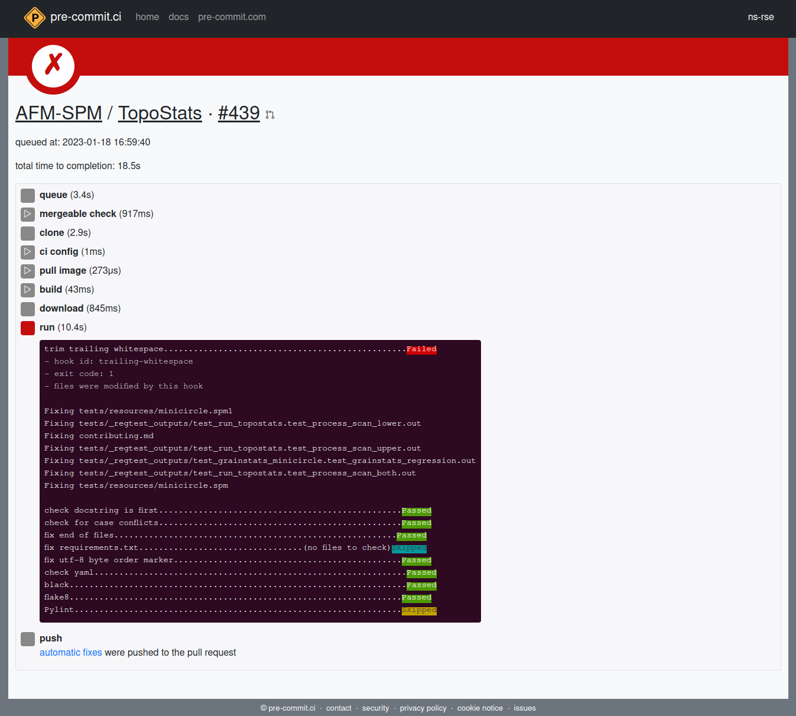
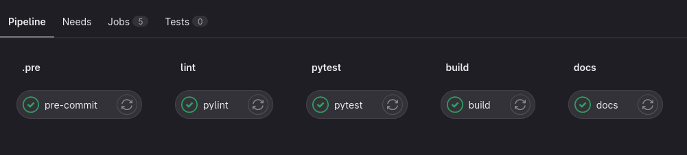
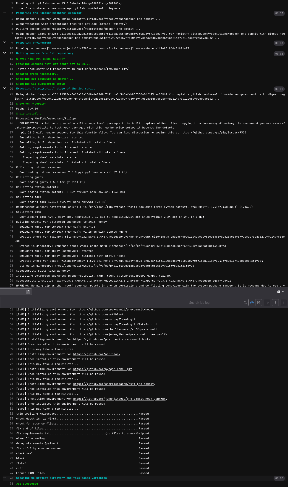

![]()
NB If you’ve not read it already I would recommend reading my previous post on using pre-commit as the contents described herein assume that you are already using pre-commit in your development.
Having pre-commit setup locally to run before making commits is great. Typically code lives in a “forge” such as GitHub or GitLab and as pre-commit is run on each commit you shouldn’t have any problems when you come to git push your code to the remote origin repository (i.e. the repository hosted on GitHub/GitLab) as all pre-commit checks will have to have passed before this will take place.
But what if for some reason you disabled pre-commit just to make some changes rather than addressing the failed linting or test? Or if you work on an open-source project and someone else contributes how can you ensure that their contributed code meets the code-style chosen by the project and that all tests pass in light of the changes that are being introduced?
Continuous Integration / Continuous Delivery (CI/CD)
The solution to this is Continuous Integration/Continuous Delivery (CI/CD) which runs various hooks on GitHub/GitLab etc. in response to specific tasks/actions that occur on the repository. The exact name or system used depends on the forge, on GitHub these are GitHub Actions (see also Actions Marketplace) whilst on GitLab uses Pipelines. There are even standalone systems which integrate with both such as the popular Jenkins.
By employing pre-commit as part of your CI/CD pipeline you ensure code meets the standards (linting, tests etc.) you wish contributions to meet before it is merged into your main/master branch`
These work by running processes under certain conditions, for example on a push to the main branch or a tag that begins with v, and they might run processes such as running the test suite for your project to ensure all tests pass, build web-pages or build the package for deployment to a repository (e.g. PyPI). They are really useful and flexible systems and can be leveraged to run pre-commit on your code when Pull Requests (PR) are made to ensure the PR passes the various hooks. Ultimately a PR results in a commit to master/main and so its logically consistent that Pull Requests should pass pre-commit prior to being merged.
Under any system you could write your own hook to run pre-commit but there is an even easier and more efficient solution if you use GitHub in the form of pre-commit.ci.
GitHub and pre-commit.ci
Currently pre-commit.ci only supports GitHub although support of other systems is in the pipeline. pre-commit.ci doesn’t need any configuration beyond your already existing .pre-commit-config.yaml (see Pre-commit : Protecting Your Future Self). Where a pre-commit hook corrects formatting issues as is the case with some of the defaults such as trailing-whitespace or check-yaml, or if you are using Python linters such as black or ruff which fix errors, pre-commit.ci can commit these changes and push them back to the Pull Request automatically. In a similar vein it will also routinely update the rev used in your .pre-commit-config.yaml, commit the change and push it back to your repository.
It is also really fast because pre-commit.ci keeps the virtual environments that are used in tests cached whereas if you wrote your own action to run this the GitHub runner that is spun up to run GitHub Actions would have to download all of these each time the action is run is they are not persistent.
Use of pre-commit.ci is free for open-source repositories and there are paid options for private or organisation repositories.
Benefits of pre-commit.ci
- Supports GitHub but more to come in the future.
- Zero configuration, just need
.pre-commit-config.yaml.- Corrects & commits formatting issues automatically without need for developer to reformat.
- Automatically updates
.pre-commit-config.yamlfor you (e.g. newrev).- Faster than your own GitHub Action.
- Free for open source repositories (paid for version for private/organisation repositories).
Configuration (.pre-commit-config.yaml)
Whilst not required it is possible to configure the behaviour of pre-commit.ci by adding a ci: section to your .pre-commit-config.yaml. The fields are fairly self-explanatory as the example below shows. Its possible to toggle whether to autofix_prs and to set the autofix_commit_msg. The autoupdate_schedule can be set to weekly, monthly or quarterly along with a custom autoupdate_commit_msg. Finally you can optionally disable some hooks from being run only in pre-commit.ci.
ci:
autofix_prs: true
autofix_commit_msg: '[pre-commit.ci] Fixing issues with pre-commit'
autoupdate_schedule: weekly
autoupdate_commit_msg: '[pre-commit.ci] pre-commit automatically updated revs.'
skip: [pylint] # Optionally list ids of hooks to skip on CISetup
Setup is relatively straight-forward, head to https://pre-commit.ci and sign-in with your GitHub account and grant pre-commit.ci access to your account.

Once you have granted access you can choose which repositories pre-commit.ci has access to. It is possible to grant access to all repositories but I would recommend doing so on a per-repository basis so you know and are in control of what is happening across your repositories. If you have administration rights to organisation repositories these should be listed in the “Select repositories” pull-down menu.

pre-commit.ci jobs
When logged into pre-commit.ci using your GitHub account you are presented with a page similar to the following which lists the accounts and any organisations that you have authorised pre-commit.ci to access.

You can follow the links through to view the history of jobs run by pre-commit.ci and whether they pass or fail. The page shows the current status and provides both Markdown and reStructured Text code for adding badges to your source documents (e.g. the Markdown badge can be added to your repositories top-level README.md and the badge will be displayed on GitHub)

You can click through and see the results of a given run and when they pass they look similar to the output you would have seen when making commits locally.

But sometimes things will fail as shown below where the trailing-whitespace hook failed and the file was modified. But since pre-commit.ci corrects and pushes such changes automatically you can see at the bottom that these changes were pushed to the Pull Request from which the originated.

GitLab
As pre-commit.ci doesn’t (yet) support GitLab integrating pre-commit into your GitLab Pipeline is a little more involved. What follows is based on the excellent post on StackOverflow describing how to achieve this integration.
You should already have a valid .pre-commit-config.yaml in place (if not work through Pre-commit : Protecting your future self (blog-post)). To enable pre-commit on your GitLab Pipeline you need to to have a pipeline in place. This is a file in the root of your repository called .gitlab-ci.yml. You need to add the following to this file…
variables:
# since we're not using merge request pipelines in this example,
# we will configure the pre-commit job to run on branch pipelines only.
# If you ARE using merge request pipelines, you can omit this section
PRE_COMMIT_DEDUPLICATE_MR_AND_BRANCH: false
PRE_COMMIT_AUTO_FIX_BRANCH_ONLY: true
include:
- remote: 'https://gitlab.com/yesolutions/gitlab-ci-templates/raw/main/templates/pre-commit-autofix.yaml'This uses the pre-commit-autofix.yaml from yesolutions to run pre-commit and as the configuration shows automatically apply fixes pre-commit makes to your code. There are more options available for configuring this pipeline and they are documented here.
Because you are allowing a third-party pipeline to access your repository when pushing the changes pre-commit makes back to your repository for this to work you must create a project access token. Under the repositories Settings > Access Tokens you can create a new token with an expiry date. You must then create a CI/CD variable called PRE_COMMIT_ACCESS_TOKEN with this token as a value.
Once you have done this your CI/CD pipeline should show at the very start the .pre stage…

…and you can click through on this to see the details of the pipeline. Note that it takes a while to run as it has to download and intialise all of the environments for each configured hook unlike pre-commit.ci (this is akin to writing your own GitHub Action to run pre-commit which would also have to download and initialise the environments).

Summary
This article has covered
- Why to integrate
pre-commitinto your Continuous Integration/Delivery pipeline. - What the
pre-commit.ciservice is and the benefits it provides. - How to integrate
pre-commit.ciwith GitHub repositories. - How to integrate
pre-commitwith GitLab repositories.
By automating linting and testing in this manner you improve and shorten the feedback loop for developers and contributors which frees up more time and focus on the code itself.
Links
- Pre-commit : Protecting your future self (blog-post)- pre-requisite reading if you are not already using
pre-commit - Pre-commit : Protecting your future self (slides) - slides from a talk given at Research Computing at the University of Leeds that extended the above blog post to cover the material in this post (hit
sto see the “speaker notes” 😉). pre-commitpre-commit.ci- How to use pre-commit to automatically correct commits and merge requests with GitLab CI - Stack Overflow